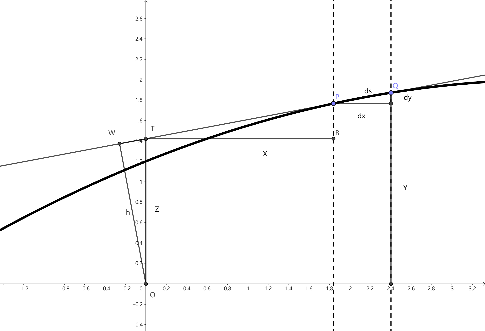

莱布尼兹级数：藏在奇数中的圆周率
Table of Contents
2
1. 积分 求面积的看法
世人皆知
但是他是怎么计算面积呢？ #+beginquote2 提出一个表示面积的符号是一回事，而掌握怎么计算面积则是完全另外一回事。莱布尼兹的变换定理就是以这个计算问题作为目标的。 #+endquote
1.1. 变换定理：玩弄三角的分部积分公式
可以利用的很少，不过坐标轴上其实已经有一些现成的东西可以辅助我们对长度的度量。切线（一般情况下非一般也是可以取极限呗）总和纵轴又一个交点。 \(\frac{\mathrm{d}y}{\mathrm{d}x}=\frac{y-z}{x}\) 这个使用一次函数求截距得到 \(z=y-\frac{\mathrm{d}y}{\mathrm{d}x}x\)

这里三角形OPQ面积为 \(h\mathrm{d}s\) 而由 OWT 和PQ斜边相似关系可得 \(\frac{h}{z}=\frac{\mathrm{d}y}{\mathrm{d}s}\) 于是可以计算这个无限小三角形OPQ面积为 \(\frac{h \mathrm{d}s}{2}=\frac{z \mathrm{d}x}{2}\)
所以可以得到无数个小三角形组成的楔形面积 \(\frac{1}{2}\int z \mathrm{d}x\)，接下来想要求曲线下的面积则我们可以稍微组合
曲线下面积＝楔形+ObB-OaA
得到1
\begin{equation} \label{eq:2} \int_a^by\mathrm{d}x=\frac{1}{2}\left( \int_a^b \mathrm{d}x+by(b)-ay(a) \right)=\frac{1}{2}\int_a^bz \mathrm{d}x+\frac{1}{2}\left[ xy \right|_a^b \end{equation}对于当代微积分我们更熟悉这个分部积分公式，这与上文是等价的
\begin{equation} \label{eq:3} \int_a^b y \mathrm{d}x=\left. yx \right|_a^b -\int_{y(a)}^{y(b)}x \mathrm{d}y \end{equation} \begin{equation} \label{eq:4} \begin{split} & \int_a^by\mathrm{d}x=\frac{1}{2}\int_a^bz \mathrm{d}x+\frac{1}{2}\left[ xy \right|_a^b=\frac{1}{2}(\int_a^by \mathrm{d}x-\int_{y(a)}^{y(b)}x \mathrm{d}y+by(b)-ay(a)) \\ & \Rightarrow \int_a^by\mathrm{d}x=by(b)-ay(a)-\int_{y(a)}^{y(b)}x \mathrm{d}y=\left. yx \right|_a^b -\int_{y(a)}^{y(b)}x \mathrm{d}y \end{split} \end{equation}
割圆 观察莱布尼兹的积分思路
2. 计算圆的积分
我们来试试他的公式，考察一个几何上很简单的情况。 将半径为1圆取在到 \((1,0)\) \((x-1)^2+y^2=1\) 即 \(x^2+y^2=2x\) 可得2 \(\int_0^1 \sqrt{2x-x^2}\mathrm{d}x=\frac{\pi}{4}\) 或者用莱布尼茨的思路使用他的变化
\begin{equation} \label{eq:1} \frac{\pi}{4}=\int_0^1y \mathrm{d}x=\left. xy \right|_0^1-\int_0^1x \mathrm{d}y \end{equation}他先前发明的公式（这里和牛顿偏偏用积分和级数算三角函数一样，有一种同样的奇妙，可是他们如此真实，再次踏足此路的人应该可以体验到走在开拓者小径上的风景变幻）
我们对圆方程微分得到
\begin{equation} \label{eq:5} 2x \mathrm{d}x+2y \mathrm{d}y=2 \mathrm{d}x \end{equation}代入上面z 和圆方程
\begin{equation} \label{eq:6} z=y-x \frac{\mathrm{d}y}{\mathrm{d}x}=y-x \frac{1-x}{y}=\frac{x}{y}=\sqrt{\frac{x}{2-x}} \end{equation}（也许莱布尼茨积分技巧有限）对于将z 对x 积分，不太方便，不如换成 x 对 z 积分。
\begin{equation} \label{eq:7} z^2=\frac{x^2}{2x-x^2} \Rightarrow x=\frac{2z^2}{1+z^2},\quad \int_0^1 z \mathrm{d}x=1-\int_0^1 x \mathrm{d}z \end{equation}事实上可以发现这里出现了一个熟悉的结构：等比数列的求和。
\begin{equation} \label{eq:8} \begin{split} \frac{\pi}{4}&=\frac{1}{2}\int_a^bz \mathrm{d}x+\frac{1}{2}\left[ xy \right|_a^b=\frac{1}{2}(1-\int_0^1 x \mathrm{d}z+1\times 1-0) \\ &=1-\int_0^1\frac{2z^2}{1+z^2}\mathrm{d}z \\ &=1-\int_0^1z^2 \left( \frac{1}{1-(-z^2)} \right)=1-\int_0^1z^2 \left( 1-z^2+z^4-z^6+\cdots \right) \\ &=1-\int_0^1 \left( z^2-z^4+z^6-z^8+\cdots \right)\\ &=1-\left[ \frac{z^3}{3}-\frac{z^5}{5}+\frac{z^7}{7}-\frac{z^9}{9}+\cdots \right|_0^1 \end{split} \end{equation}这样我们得到了奇数序列组成的 \(\pi\)
\begin{equation} \label{eq:9} \frac{\pi}{4}=1-\frac{1}{3}+\frac{1}{5}-\frac{1}{7}+\frac{1}{9}+\cdots \end{equation}惠更斯给予了极高的评价，并在返回的附信中说，这在数学家中是一个值得永远记住的发现。
——莱布尼茨
如果你对数字游戏感兴趣甚至可以进一步得到一些有趣的数字规律
\begin{equation} \label{eq:10} \begin{split} \frac{\pi}{8}&=\overbrace{(\frac{1}{2}-\frac{1}{6})}^{\frac{1}{3}}+\overbrace{(\frac{1}{10}-\frac{1}{14})}^{\frac{1}{35}}+\overbrace{(\frac{1}{18}-\frac{1}{22})}^{\frac{1}{99}}+\overbrace{(\frac{1}{26}-\frac{1}{35})}^{\frac{1}{195}}+\cdots \\ &=\frac{1}{4-1}+\frac{1}{36-1}+\frac{1}{100-1}+\frac{1}{196-1}+\cdots\\ &=\frac{1}{2^2-1}+\frac{1}{6^2-1}+\frac{1}{10^2-1}+\frac{1}{14^2-1}+\cdots \end{split} \end{equation}也就是相间的偶数平方减去一。
两点：
- 变换使用了无穷小
- 使用了级数和的积分等于积分的级数和（逐项积分）
但不妨碍这成为一个微积分的杰作。
现在学微积分，我们都是从极限过度到微分，可是从这几个粒子可以看出前人往往是先从积分入手的，微分似乎反而是逆运算并非重点。这和当时的数学希望达到的目的有很大关系。
其它算 \(\pi\) 法，如今这个字母就代表这一个常数（之后我们会有 \(\mathrm{e}\) 的, \(\gamma\) 也会有的；）
几次提到急切向前推进，像牛顿一样快速获得大量有意义的结果。这似乎也是后人看历史中科学大爆发的一致3观点
当然，印度人又一次提前发现了神秘的级数，甚至几年前英国人也找到了反正切的级数展开
\begin{equation} \label{eq:11} \text{arctan}\, x=x-\frac{x^3}{3}+\frac{x^5}{5}-\frac{x^7}{7}+\cdots \end{equation}因此，英伦欧陆对于微积分的诸多发明又有了争执的话题。不过当莱布尼茨的学生伯努利兄弟开始登场时，众多数学家将会更加注重发挥这样新工具的力量了。